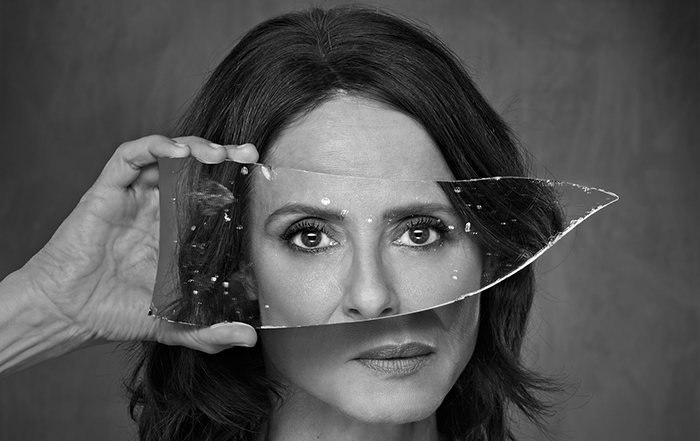

Estreno Nacional: "La Madre"

Un Desafío Emocional sobre las Tablas
El Teatro Jovellanos se viste de gala para acoger el estreno nacional de "La Madre", la aclamada obra del dramaturgo Florian Zeller. Esta pieza, que forma parte de su famosa trilogía, llega a Gijón protagonizada por una de las grandes figuras de la escena española, en una interpretación que promete ser el evento teatral de la temporada.
La obra explora los límites de la soledad, el amor materno y la fina línea que separa la realidad de la alucinación. A través de un texto brillante y una puesta en escena minimalista pero poderosa, "La Madre" atrapa al espectador en un laberinto emocional donde cada silencio y cada mirada cuentan una historia desgarradora sobre el paso del tiempo y el nido vacío.
No se trata solo de teatro, sino de una experiencia catártica que invita a la reflexión profunda. La crítica internacional ya la ha definido como una "obra maestra de la psicología humana", y ahora el público asturiano tiene la primicia de presenciar su versión más íntima y potente.